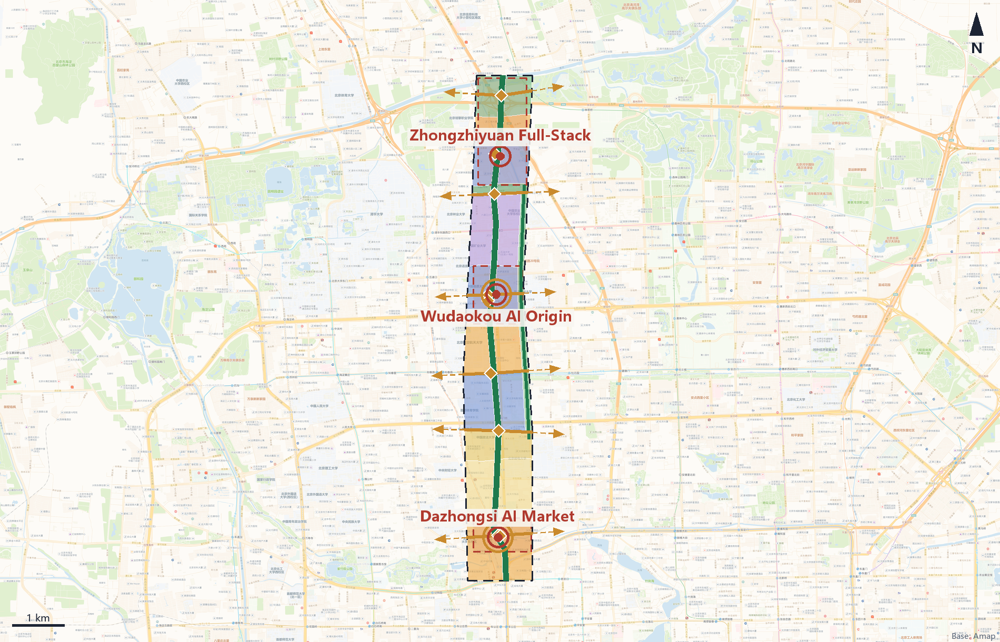
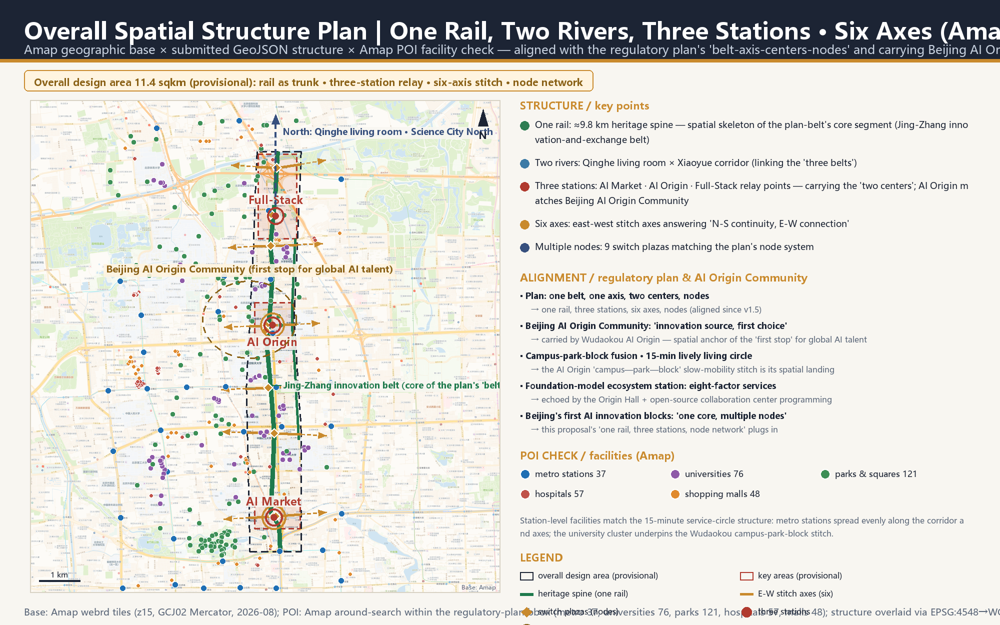
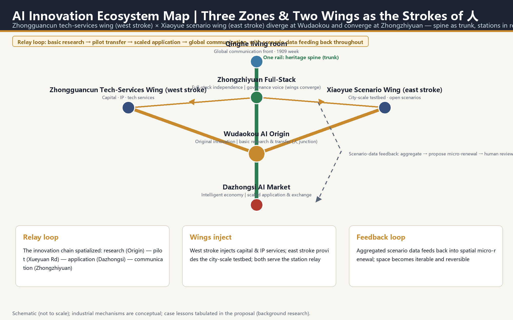
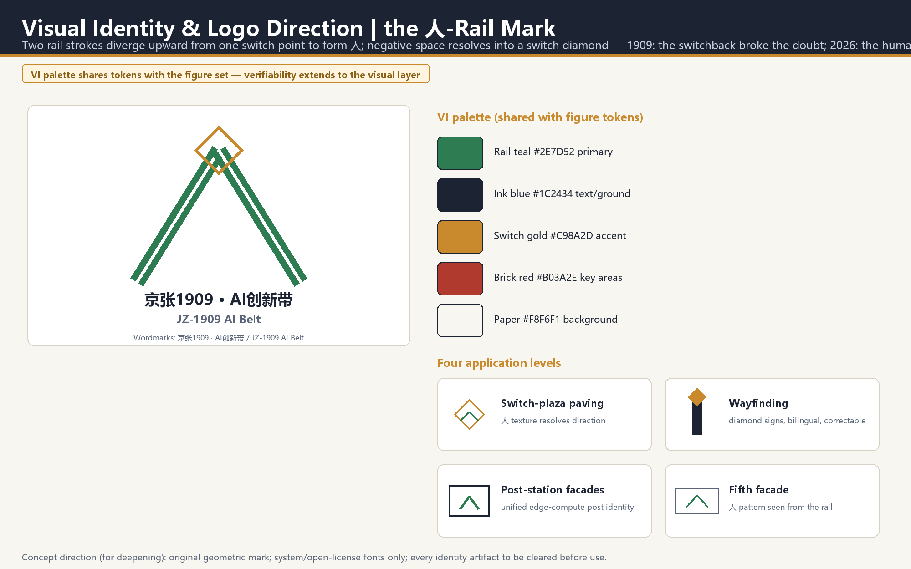

Key metrics (recomputed under EPSG:4548)
Overview map · land-use structure and design elements (Amap base, north up)

Land-use legend
Commercial services 05 255.6 haResidential 0701 132.4 haCommunity services 0702 65.8 haResearch 0802 306.5 haEducation 0804 113.4 haPark green 1401 245.0 haProtective green 1402 17.8 haSquare 1403 4.7 ha
Blue-green public space & structural elements
Former Jing-Zhang Railway alignment (heritage spine)Existing primary roadKey area (provisional constraint)Forecourt plazas & public spaceDemonstration building footprintBlue-green open spaceHeritage protection area (existing)Switch plazas (9 lines, 18 corridor crossings, one point per line)Six east-west stitch axes (dashed extensions = city side, illustrative)
Land-use codes follow the site-package classification subset; key areas and existing constraints use low-contrast dashed styling to mark provisional/existing status.
Slow-mobility skeleton ≈ 25.5 km (centerline total, recomputed under EPSG:4548); six east-west stitch axes deliver the plan's 'N-S continuity, E-W connection'; breaks stitched barrier-free with herringbone terraced ramps; 9 switch plazas at 18 corridor crossings of 9 transverse lines, one point per line (concept points).
Three-Level Scope Framework
Strategy and structure
Conceptual urban design (directional)
Conceptual urban design (directional) + delivery-path advice
Structure: One Rail, Two Rivers, Three Stations · Six Axes, Multiple Nodes · Two Wings as the Strokes of 人
Jing-Zhang heritage slow-mobility spine: a ≈9.8 km, ≈116 m-wide heritage park ridge along the 1909 alignment, combining walking, cultural display and AI scenarios (core segment of the plan's 'belt').
Qinghe riverside living room (≈83.4 ha waterfront at the north) × Xiaoyue River scenario-connection corridor (in-site segment ≈62 m inside the east edge; the river channel itself runs outside the site) — linking the plan's 'three belts'.
Dazhongsi AI Market, Wudaokou AI Origin and Zhongzhiyuan Full-Stack as relay switch points (AI Market and AI Origin carry the plan's 'two centers'); the Two Wings (Zhongguancun tech-services westward, Xiaoyue scenario eastward) diverge at Wudaokou and converge at Zhongzhiyuan — the two strokes of 人.
Six east-west stitch axes (Dazhongsi / Xueyuan Rd / Zhichun Rd / Wudaokou / Ring-5 / Qinghe) answer the plan's 'N-S continuity, E-W connection'; 9 switch plazas at 18 corridor crossings of 9 transverse lines, one point per line, match the plan's 'multiple nodes'.
Three mandates of 人: AI empowers industry (left stroke) and space (right stroke), and the junction is people first — two strokes spell the human; intelligence empowers industry and place.
Recomputed metrics and data gaps
Known metrics (recomputable from submitted GeoJSON)
| Metric | Value | Basis |
|---|---|---|
| Submitted area | 1,141.3 ha | direct measure of geometry/site_boundary.geojson |
| Blue-green open space | 267.9 ha | sum of green_space layer |
| Blue-green share | 23.5% | green_space / site |
| Public space area | 6.3 ha | sum of public_space layer |
| Public space share | 0.6% | public_space / site |
| Demonstration footprint | 13.0 ha | sum of buildings layer |
| Demonstration footprint share (design) | 1.1% | buildings / site; not a statutory density |
| Road centerline length | 25,471 m | sum of roads layer |
| Heritage spine length | 9,800 m | former rail alignment in constraints |
| Phase 1 area | 748.9 ha | phasing layer |
| Phase 2 area | 167.6 ha | phasing layer |
| Phase 3 area | 224.7 ha | phasing layer |
| Key area count | 3 | feature count of key_areas |
| Land-use parcels | 63 | feature count of land_use |
Statutory control metrics (honestly marked as pending official data)
Floor area ratio · Pending official dataBuilding height limit · Pending official dataStatutory coverage · Pending official dataStatutory green ratio · Pending official dataSetback control · Pending official data
Task coverage and professional matrices
Contributor self-check status
| ✓ | BOUNDARY_TRUST | 使用临时约束边界，已在正文/图面/假设中标注；官方边界发布后需重算。 |
| ✓ | KEY_AREAS_TRUST | 三处重点区域为临时约束 polygon，已标注 provisional；不作为正式红线或精确面积依据。 |
| ✓ | LAND_USE_TOPOLOGY | 63 个用地单元由共享切割线平面切分生成，并集与提交边界重合、无重叠。 |
| ✓ | METRICS_REPRODUCIBLE | 全部 known 指标由提交几何在 EPSG:4548 下复算；法定管控指标如实标注 unknown。 |
| ✓ | VISUAL_STATIC | 可视化页为离线静态 HTML，无远程资源、脚本、字体或追踪。 |
| ✓ | BILINGUAL_CONTRACT | 中文主稿 + 英文全文对照，展示件与含文字图件均提供双语。 |
| ✓ | PROFESSIONAL_EVIDENCE | 正文含标准、深度、图层、指标与来源锚点；机器索引保存在结构化文件。 |
All 7 checks pass; the official self_check_submission.py result governs at submission time.
Phasing
Renewal project list (13 items)
| ID | Project | Type | Phase | Preconditions |
|---|---|---|---|---|
JZ1909-01 | Dazhongsi four-quadrant walking links | Transport/public space | Near | Transport study, road redlines |
JZ1909-02 | AI Market forecourt plaza and interchange hall | Public space/building | Near | Transit-station integration plan |
JZ1909-03 | Origin Living Room (Memory Hall) | Culture/renovation | Near | Heritage data, title confirmation |
JZ1909-04 | Open-source release square | Public space | Near | Operating body confirmed |
JZ1909-05 | Southern section of heritage spine | Green/slow mobility | Near | Land title, break engineering |
JZ1909-06 | Campus-city slow-mobility stitch | Slow mobility | Mid | Campus management coordination |
JZ1909-07 | Xiaoyue scenario-connection green corridor | Blue-green/scenario | Mid | River blue line, ecology |
JZ1909-08 | Full-Stack Station research core and lab (concept pilot starts mid-term; full build-out long-term) | Industry/building | Mid-to-long | Regulatory conditions, access policy |
JZ1909-09 | Qinghe riverside ecological living room | Blue-green | Long | Flood control and ecology studies |
JZ1909-10 | Fifth Ring viewing connection | Slow mobility/landscape | Long | Engineering feasibility |
JZ1909-11 | Edge-compute post pilot | New infrastructure | Mid | Energy and safety assessment |
JZ1909-12 | 1909 contribution wall and wayfinding | Culture/signage | Near | Copyright clearance |
JZ1909-13 | Switchback switch-plaza sequence | Public space/signage | Near | Levels and utilities data |
Scenario-space-operations matrix (12 cards; 3 are industry test/validation)
| Card | Spatial carrier | Summary | Operator (suggested) | Data & funding | Rollback |
|---|---|---|---|---|---|
| 01 AI slow-mobility navigation | Entire heritage spine | Explainable wayfinding and low-intrusion sensing identify walking breaks and crowding; output remains human-reviewable | District operator + municipal maintenance | Municipal open data + aggregated sensing data | Fall back to static signage |
| 02 Enterprise-service Copilot | Service posts at three stations | Policy retrieval, space matching and application guidance with sources and confidence attached | Park service operator | Government open data + licensed enterprise data; operating subsidy | Fall back to staffed service counters |
| 03 Public-safety and event-operations review | Forecourt plazas | Aggregate-only crowd and event-risk alerts; decisions remain human | Local authority + event organizer | Aggregated crowd data (no individual storage) | Disable alerts, keep human patrols |
| 04 Low-speed robot delivery test | Origin Community local streets | Route-limited, speed-limited, reversible delivery pilot with tiered data opening | Delivery enterprise + community council | Self-funded; route test data tiered | One-stop shutdown; full manual delivery resumes |
| 05 AI cultural guide | 1909 memory route | Multilingual narration of Jing-Zhang Railway and Zhongguancun innovation history, fact-checked | Cultural operator | Fact-checked corpus; cultural project funds | Fall back to human guides and print |
| 06 AI health-service navigation | Community service nodes | Connects nearby health resources without diagnostic conclusions; medical and other listed public-service venues keep on-site guidance and human-operated channels, with traditional and smart services running in parallel per State Council Document 2020 No.45 as policy background (its phased goals have expired; referenced for scenario design only) | Community health institutions | Public health-resource directories | Full human service channel retained |
| 07 Safety-governance sandbox (test) | Zhongzhiyuan laboratory | Visit-able, bookable and auditable node for standards, trusted evaluation and red-team testing | Research institutes + standards bodies | Licensed evaluation-task data | Sandbox closure does not affect open space |
| 08 Edge-compute posts (test) | Public service points at three stations | New-infrastructure prototype fusing distributed compute and low-carbon energy, for professional deepening | New-infrastructure operator + government guidance | Enterprise investment + compute service revenue | Post converts to public service kiosk |
| 09 Open-source release hall | Origin Station plaza | Achievement release, code-contribution display and small roadshows | Developer community + venue operator | Community funds + event sponsorship | Reverts to regular event space |
| 10 Low-carbon operations monitoring (test) | Qinghe riverside living room | Stormwater, energy and carbon monitoring with public metric definitions | Municipal / environmental operator | Municipal sensor network | Definitions public; can be taken offline |
| 11 Data-element reception hall | Dazhongsi district | A compliant, authorized and auditable urban interface for data circulation | Data-exchange service body | Licensed data products | Close the online portal, keep the physical service |
| 12 1909 global AI week route | Belt-wide public spaces | Annual operations mix of developer festival, scenario open days and pilgrimage route | Organizer + local government | Sponsorship + ticketing | Scales down to community-level events |
Presentation figures (bilingual)





All eight figures derive from the same GeoJSON and metrics (the spatial-structure plan additionally layers Amap base tiles and POI check points); English counterparts share the .en.png names.
Sources and assumptions
Source registry (formal basis / registry layer / provisional & background tiers)
- SITE-PACKAGE — 任务书、枚举、设计空间、限值、模式与临时边界等场地包材料。
- SOURCE-REGISTRY — 区分 formal 可用、背景、临时与待审资料的登记层。
- PROCESSED-FACT-PACK — 范围、任务、资料用途与缺资料清单的导航层，非新权威来源。
- BOUNDARY-SOURCE — 提交总体设计范围（临时约束），仅用于生成、展示与临时自检。
- KEY-AREA-SOURCE — 三处重点区域范围（临时约束），仅用于生成、展示与临时自检。
- OFFICIAL-ANNOUNCEMENT — 公告 1.3/1.4/1.5 的任务、范围、面积、语言与成果语境主控依据。
- AGENT-TASKBOOK — 十条共创原则、六项智能体任务、场景/品牌/运营要求与边界条款。
- GLOBAL-CASE-BACKGROUND — 全球创新生态案例为背景研究（匹兹堡、伦敦国王十字、Kista、Kendall Square、深圳南山、杭州城西、慕尼黑 Werksviertel），仅作经验参照，不作为正式证据。 常识级背景，未逐案核验最新数据；不得作为投资额、产值或政策结论依据。
- KG-DRAFT-2024 — 《北京海淀区京张铁路遗址公园沿线（人工智能创新街区重点地区）HD00-1601等街区控制性详细规划（街区层面）（2022-2035年）（草案）》公示图则（北京市规划和自然资源委员会海淀分局，2024-12-20 公示）：空间结构“一带一轴、两心多点”、三大目标定位、规模控制（常住约36.4万人、城乡建设用地约1648.1公顷、建筑规模约2369.3万平方米）、九类主导功能分区、配套设施（公共服务298处等）、整体景观结构“三带六轴、多廊多中心”、交通体系（道路网密度约8.0公里/平方公里、绿色出行80%）等结构性衔接依据。 公示图则为图示层级材料，非精确红线与管控图则全文；仅作空间结构与指标口径衔接，不作法定管控数值依据。
- KG-APPROVAL-2026 — 北京日报报道（2026-08-12）：市规划自然资源委于 2026-08-11 批复《北京海淀区京张铁路遗址公园沿线（人工智能创新街区重点地区）HD00—1601等街区控制性详细规划（街区层面）（2024年—2035年）》；范围东至新街口外大街、西至中关村大街、北至成府路、南至西直门外大街，共 9 个街区约 1668.2 公顷；以绿色公共空间建设引领区域城市更新，发展大模型、智能体、具身智能等新业态，构建生活圈与创新圈融合的一刻钟社区服务圈。 新闻报道层级；获批控规成果全文（含精确图则）尚未公开取得，结构性引用，待正式成果公开后复核。
- HD-YUANDIAN-2026 — 北京市海淀区人民政府官网《北京AI原点社区，全球AI人才创新创业的“第一站”》：北京AI原点社区约 3 平方公里（以东升大厦为中心），立足“创新策源、创业首选”特色定位，目标打造“全球AI人才创新创业第一站”；东升产业空间集聚 AI 领域企业 300 多家、占比超七成（2025 年 AI 相关专利商标超 2000 项）；1 公里半径内聚集 30 多所高校和科研机构、超 1000 位 AI 科学家、1.3 万名开发者、10 万名相关专业学子；原点学堂（免费工位、全生命周期创业服务）、大模型生态服务站（“找政策、找资金、找算力、找人才、找伙伴、找智力、找空间、找场景”八大核心问题一站式解决）、“15分钟活力生活圈”（4000 余套人才公寓、海淀未来学校等）；社区已纳入北京市首批人工智能创新街区，北京市打造以海淀为核心的“一核多点”布局。本案五道口·原点站空间承接与功能策划呼应依据。 政府官网新闻层级材料；社区范围为运营口径、非规划红线，企业/人才数据为报道时点值，仅作结构对位与功能策划呼应，不作法定依据。
- AMAP-POI-2026 — 高德开放平台周边检索 API（2026-08 检索，检索范围 lng 116.300–116.380 / lat 39.925–40.035（控规范围+北段至清河），双中心检索，GCJ02→WGS84 转换）：地铁站 37、高等院校 76、公园广场 121、综合医院 57、购物中心 48，用于全部地图图版（spatial-structure / overview-map / land-use-structure / mobility-bluegreen / key-areas）的设施分布校核叠加与详细设计对位标注；底图为高德地图 webrd 瓦片（z15）。 商业地图 POI 存在时效与收录偏差，仅作现状设施分布校核与图面叠加，不进入指标复算口径。
Key assumptions and triggers
- A-BOUNDARY-001 provisional_in_use 总体设计范围与三处重点区域目前采用维护者登记的临时粗略 polygon（provisional_constraint, official_boundary=false）。
方案可用于评审讨论与临时自检；官方边界发布后，用地/建筑/道路/绿地/公共空间/分期图层与全部面积指标需整体重算。 - A-CONTROLS-001 pending_professional_confirmation 控规容积率、建筑高度、建筑密度、绿地率管控、退线与道路红线等法定条件无公开正式文件。
全部法定管控指标在 metrics.json 中标注 unknown，正文以概念建议表达，不作数值伪装。 - A-EXISTING-001 pending_official_survey 现状建筑底数、权属、结构安全、市政管线与文保控制线缺失。
拆改留仅区分新建/改造/保留示范对象，不指定拆除对象；constraints.geojson 中现状要素为示意性推断（confidence=low）。 - A-TRAFFIC-001 pending_specialist_study 轨道一体化、道路断面、桥隧与慢行断点工程可行性需交通专项研究。
交通类空间建议均为概念方案，不构成工程结论。 - A-TRAFFIC-002 pending_professional_confirmation 现状交通框架（13/12/15 号线站点与换乘、京藏高速、北四环、学院路、成府路）为公开资料推断；constraints 图层中 12/15 号线与北四环为示意线位（confidence=low），京藏高速位于场地东侧外缘、不落入图层仅文字标注。
现状框架仅作思考底座；站前广场落位与规模分级需随正式交通与道路红线资料复核。 - A-RIVER-001 pending_specialist_study 小月河河道本体位于场地之外（学院路/西土城路一线）；GREEN-002 绿廊为场地内接驳段（沿东边线内缩约 62 米生成），不临水。
定名“小月河场景连接绿廊”以正名实；跨路衔接河道段待专项，不作为滨水空间表达。 - A-MUNICIPAL-001 pending_specialist_study 能源负荷、市政容量、防洪与生态专项条件缺失。
新型基础设施仅为原型方向，列为正式深化前置条件。 - A-CONTROLS-002 partially_aligned_pending_full_text 京张铁路遗址公园沿线街区控规草案已于 2024-12-20 公示图则、并于 2026-08-11 获批复（2024—2035 年版）；公示图则与获批报道给出空间结构“一带一轴、两心多点”与全域规模口径，但获批成果的精确管控图则与红线全文尚未公开取得。
本案 v1.5 起按公示图则做空间结构与产业方向衔接（六轴缝合、两心对应、绿带引领更新）；容积率等法定管控指标仍标注 unknown，待正式控规成果公开后逐项复核。 - A-OPERATION-001 concept_only 活动体系、社区运营、场景开放与转化路径均为运营概念建议。
不构成已确定的政府活动、招商、资金或政策安排。